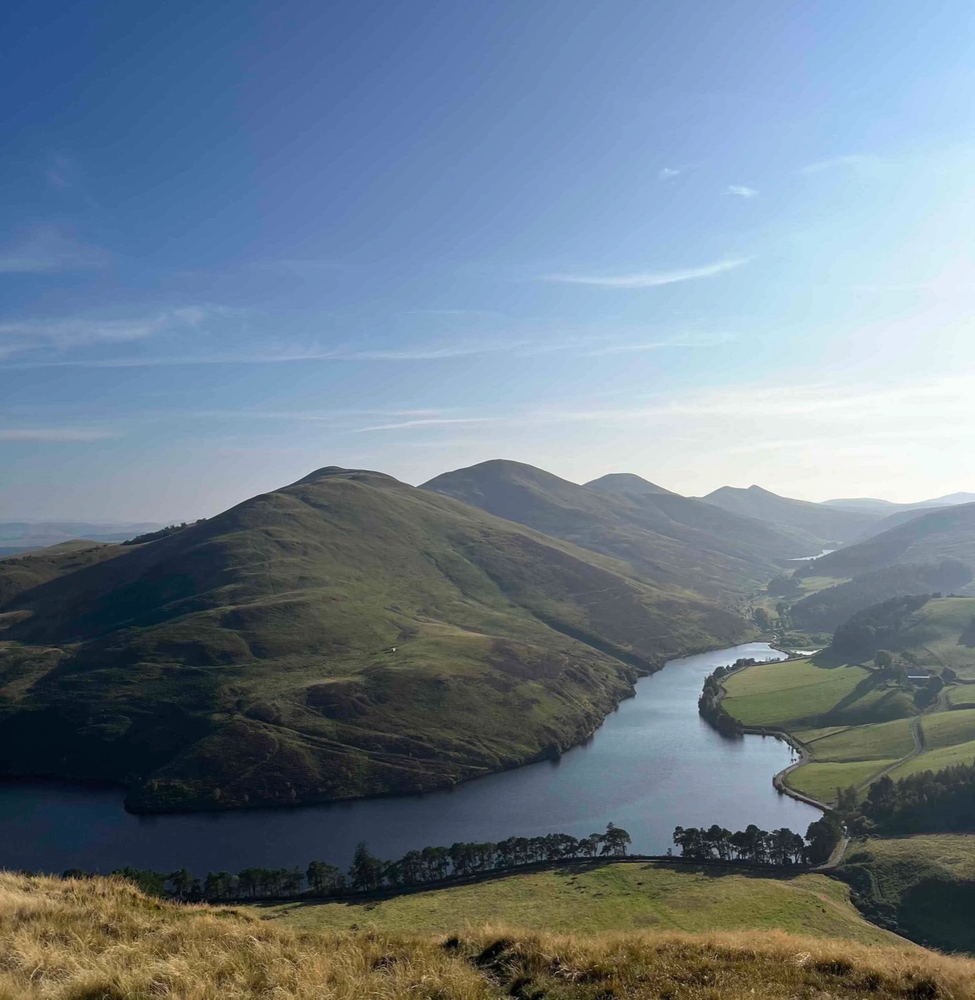

579 mThe Pentland Hills
The big one. Open ridge over Caerketton and Allermuir, on to Turnhouse, Carnethy and Scald Law if the day allows — the reservoirs below and the Forth beyond.
- Grade Moderate
- Duration Half / full day
- High point 579 m